SpectriPy: Criss-Crossing R and Python for Powerful Mass Spectrometry Data Analysis Workflows
Source:vignettes/combined-r-python-ms-analysis.qmd
Outline
🎯 show how R and Python MS data analysis methods can be combined in a single (interactive) workflow.
Parts of the analysis are performed in R, parts in Python, with the MS data being shared between them.
-
🍴 Methods:
- Quarto document
- R packages: SpectriPy (Graeve et al. 2025), Spectra, xcms (Louail et al. 2025)
- Python libraries: matchms (Huber et al. 2020)
-
🔀 combine R and Python to:
- perform chromatographic peak detection on an untargeted LC-MS/MS data file
- extract and process MS2 spectra for detected chromatographic peaks
- download public reference MS2 data and process them
- calculate similarity between experimental and reference MS2 spectra for a tentative annotation of the detected chromatographic peaks
Introduction to LC-MS/MS data
- Liquid chromatography mass spectrometry (LC-MS) is the method of choice in untargeted metabolomics (or small molecule - omics).
- Molecules are separated by LC, get ionized and then detected by MS.
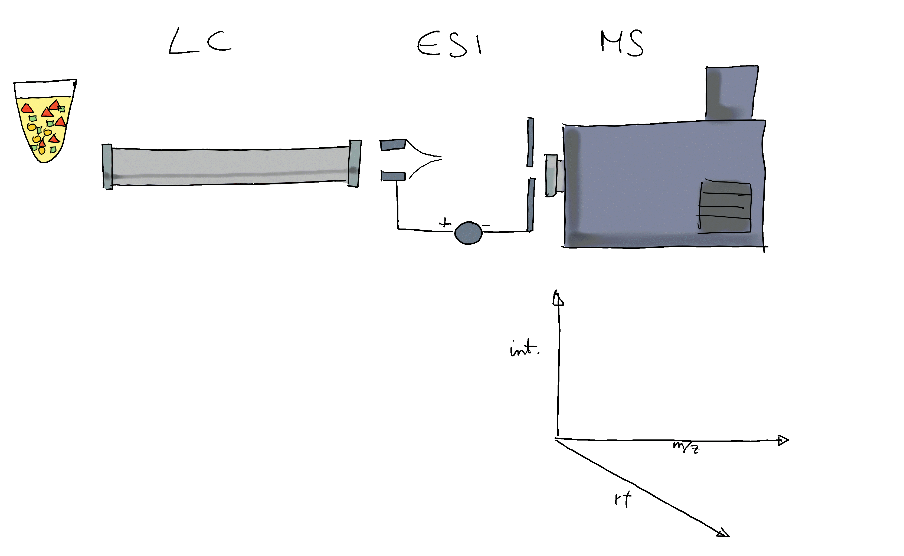
- The signal is analyzed along retention time, identifying chromatographic peaks: signal from ions of the same molecule.
- These are characterized by their m/z and retention time.
- To improve annotation confidence, MS2 spectra are generated: fragmenting the ions and recording the m/z of their fragments.
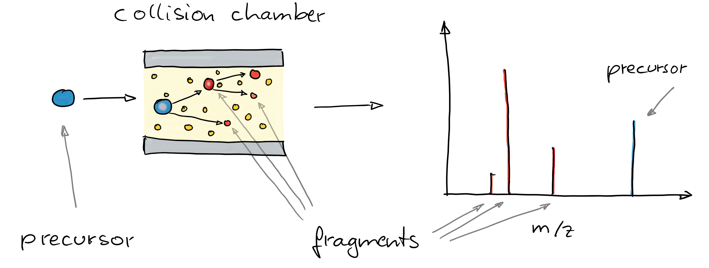
- Such MS2 spectra provide information on the compound’s structure.
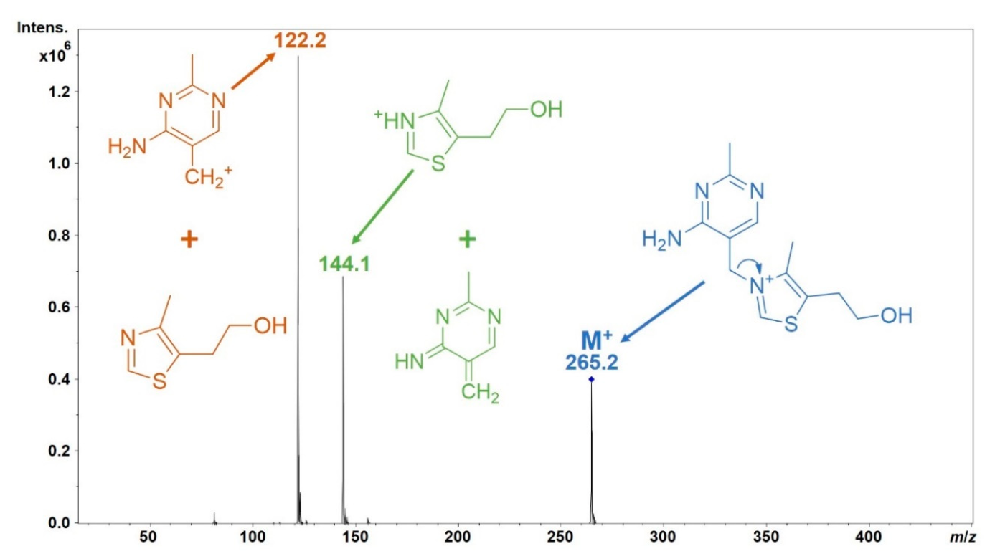
- Comparing these MS2 spectra against a reference database with MS2 spectra of pure standards can be used to annotate the LC-MS features.
- Similarity between experimental and reference spectra can be calculated using various methods.
Criss-crossing R and Python for powerful MS data analysis workflows
Data import
Load key R packages for the preprocessing of LC-MS data.
Data (provided through MsDataHub): - LC-MS/MS measurement of a pesticide mixture. - MS2 data generated with a data dependent acquisition (DDA) strategy.
#' R session:
dda_file <- MsDataHub::PestMix1_DDA.mzML()
dda_data <- readMsExperiment(dda_file)Note
ℹ️ for more information on general MS data handling and exploration see also the respective tutorials in 👩🚀 Metabonaut
For initial data inspection we create below the total ion chromatogram (TIC) of the data and indicate for which (precursor) ions MS2 spectra were acquired.
#' R session:
chromatogram(dda_data) |>
plot()
grid()
plotPrecursorIons(dda_data)
grid()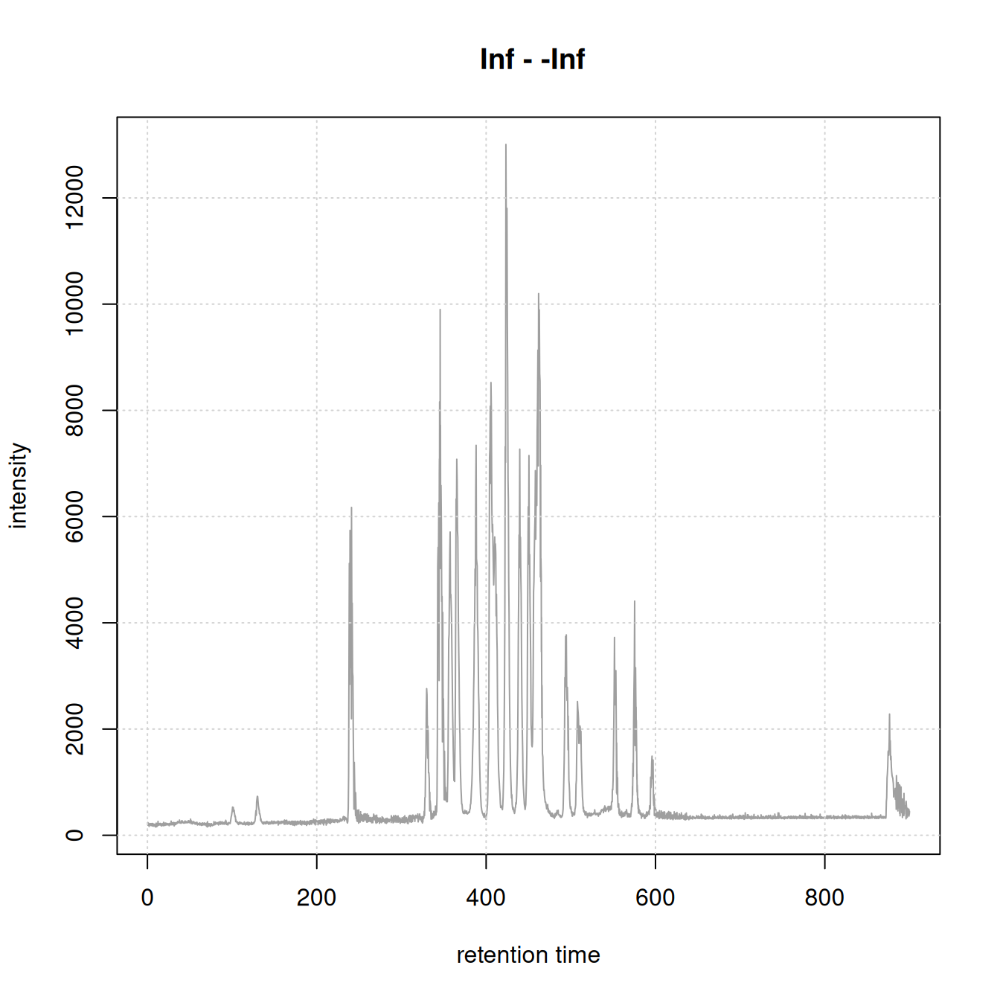
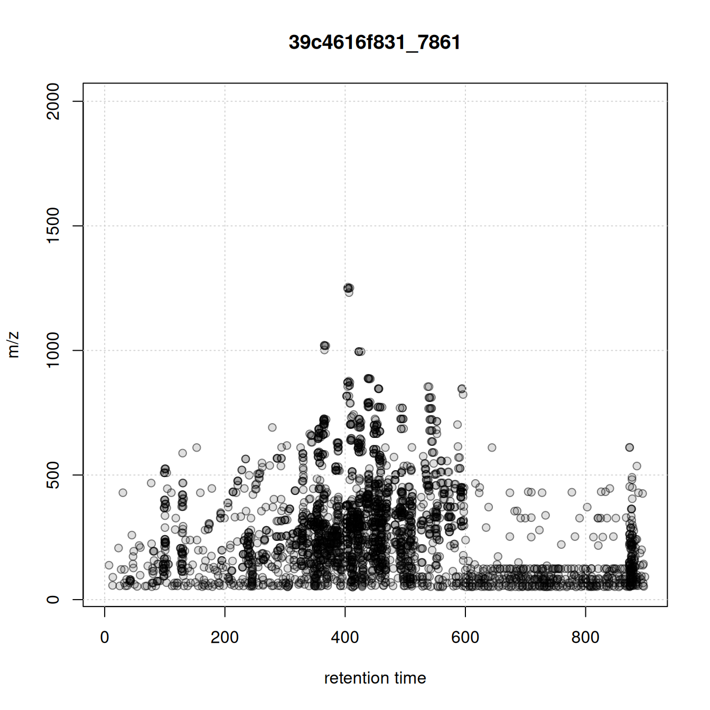
MS1 data preprocessing
Next we process the MS1 data to identify and quantify chromatographic peaks using the xcms package (Louail et al. 2025).
Note
ℹ️ For more information on peak detection and parameter settings see 👩🚀 Metabonaut
#' R session:
cwp <- CentWaveParam(snthresh = 5, noise = 100, ppm = 10,
peakwidth = c(3, 30))
dda_data <- findChromPeaks(dda_data, param = cwp, msLevel = 1L)- Identify and extract MS2 spectra measured for all (precursor) ions for each MS1 chromatographic peak.
#' R session:
#' identify and extract MS2 spectra for each chromatographic peak
dda_ms2 <- chromPeakSpectra(dda_data)
dda_ms2MSn data (Spectra) with 158 spectra in a MsBackendMzR backend:
msLevel rtime scanIndex
<integer> <numeric> <integer>
1 2 128.237 1000
2 2 128.737 1008
3 2 129.857 1023
4 2 237.869 1812
5 2 241.299 1846
... ... ... ...
154 2 575.255 5115
155 2 596.584 5272
156 2 592.424 5236
157 2 596.054 5266
158 2 873.714 7344
... 37 more variables/columns.
file(s):
39c4616f831_7861
Processing:
Filter: select MS level(s) 2 [Thu May 28 13:15:33 2026]
Merge 1 Spectra into one [Thu May 28 13:15:33 2026] 🔎 visualize the results:
- plot EIC of first chromatographic peak
- indicate the MS2 spectra measured for that peak (if any)
- plot the associated MS2 spectra
#' R session:
pid <- dda_ms2$chrom_peak_id[1L]
chrs <- chromPeakChromatograms(
dda_data, peaks = pid, expandRt = 4)
par(mfrow = c(1, 2))
#' Plot the EIC
plot(chrs)
grid()
#' Subset MS2 spectra for the present chromatographic peak
s <- dda_ms2[dda_ms2$chrom_peak_id == pid]
abline(v = s$rtime, col = "#ff000080", lty = 3, lwd = 2)
plotSpectra(s[1L], lwd = 2)
grid()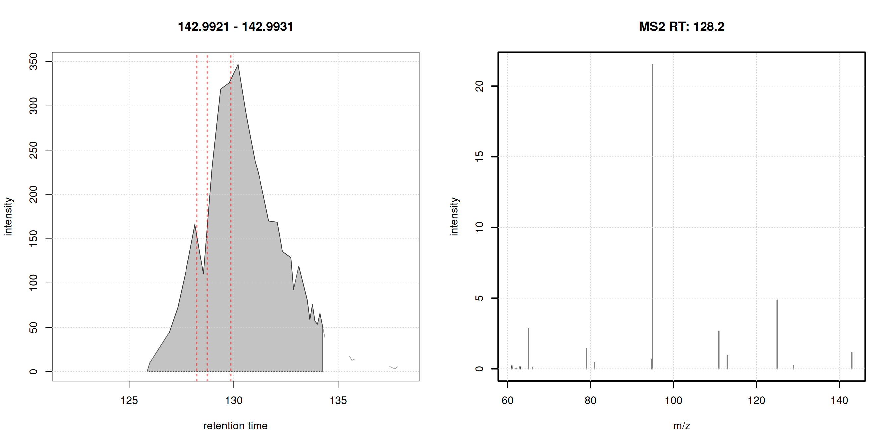
Each chromatographic peak represents the signal for an ion of a molecule (pesticide?) present in the sample. In untargeted metabolomics we don’t know the identity of these molecules (yet).
MS2-based annotation of MS1 signals
MS2 (fragment) spectra generated from ions collected for MS1 signals can provide information on the structure of the measured compound. In MS2-based annotation workflows such experimental MS2 spectra are compared against reference spectra, i.e., MS2 spectra generated from ions of known origin.
Clean and process chromatographic peaks’ MS2 spectra
- 🧹 clean MS2 data:
- remove peaks with an intensity below 5% of the maximum peak intensity
- reduce spectra: for peaks with similar m/z value (difference < 20ppm) keep only the peak with the higher intensity
- remove the precursor peak from the spectra
- scale peak intensities per spectrum such that their intensities sum up to 1
- keep only spectra with at least 4 fragment peaks.
#' R session:
#' filter function to remove peaks with an intensity < 5% of max intensity
low_int <- function(x, ...) {
x > max(x, na.rm = TRUE) * 0.05
}
#' clean and filter peaks
dda_ms2 <- filterIntensity(dda_ms2, intensity = low_int) |>
reduceSpectra(ppm = 20) |>
filterPrecursorPeaks(ppm = 20) |>
scalePeaks()
#' keep spectra with at least 4 fragment peaks
dda_ms2 <- dda_ms2[lengths(dda_ms2) > 3]
#' R session:
plotSpectra(dda_ms2[1:4], lwd = 2)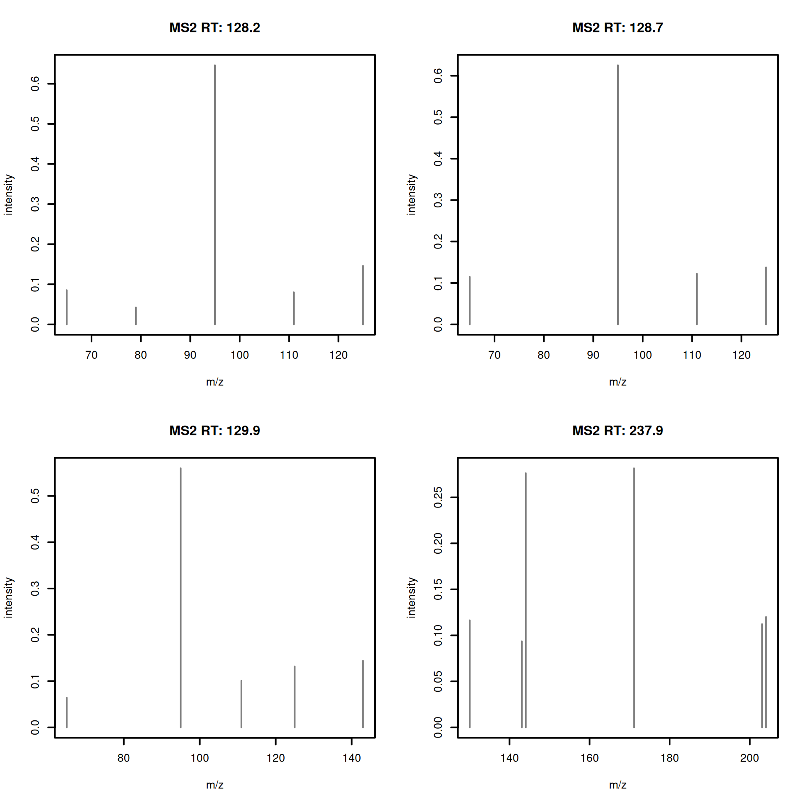
Load reference MS2 data
- Download and import public reference MS2 spectra: GNPS pesticide data
#' R session:
url <- file.path("https://external.gnps2.org/gnpslibrary/",
"GNPS-COLLECTIONS-PESTICIDES-POSITIVE.mgf")
library(curl)
pest_mgf <- basename(url)
if (!file.exists(pest_mgf))
curl_download(url, destfile = pest_mgf)
library(MsBackendMgf)
pest_ms2 <- Spectra(pest_mgf, source = MsBackendMgf())- Visualize example reference spectra.
#' R session:
plotSpectra(pest_ms2[1:4], lwd = 2)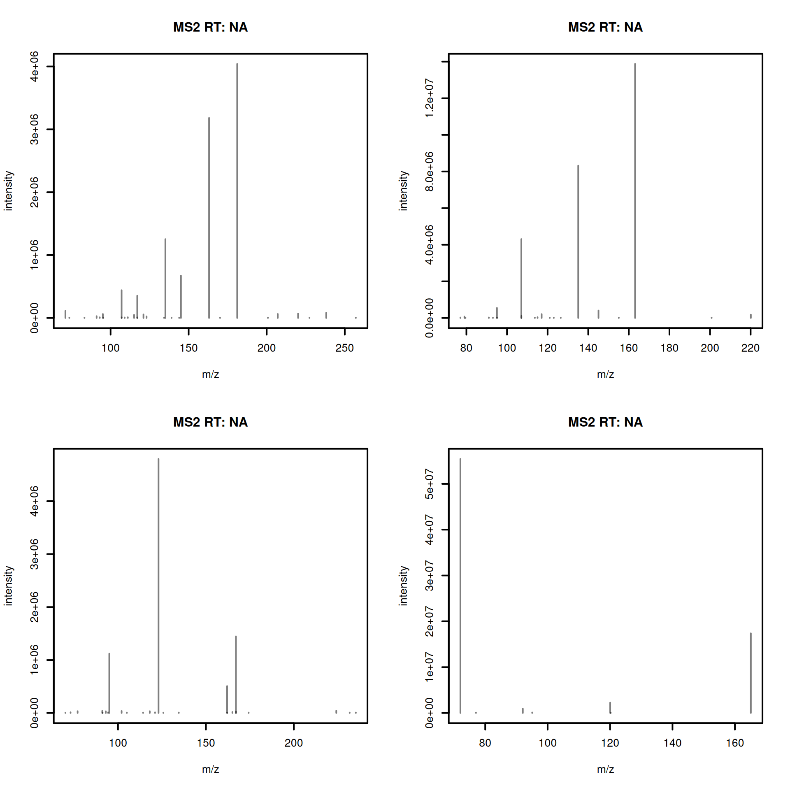
- Clean and process the reference spectra.
#' R session:
#' apply the same processing as for experimental spectra
pest_ms2 <- filterIntensity(pest_ms2, intensity = low_int) |>
reduceSpectra(ppm = 20) |>
filterPrecursorPeaks(ppm = 20) |>
scalePeaks()
pest_ms2 <- pest_ms2[lengths(pest_ms2) > 3]
length(pest_ms2)[1] 416Rich metadata is important for annotation. The downloaded reference data set provides some metadata information, most of it encoded in the the spectrum’s name:
#' R session:
spectraVariables(pest_ms2) [1] "msLevel" "rtime"
[3] "acquisitionNum" "scanIndex"
[5] "dataStorage" "dataOrigin"
[7] "centroided" "smoothed"
[9] "polarity" "precScanNum"
[11] "precursorMz" "precursorIntensity"
[13] "precursorCharge" "collisionEnergy"
[15] "isolationWindowLowerMz" "isolationWindowTargetMz"
[17] "isolationWindowUpperMz" "MSLEVEL"
[19] "SOURCE_INSTRUMENT" "FILENAME"
[21] "SEQ" "IONMODE"
[23] "ORGANISM" "NAME"
[25] "PI" "DATACOLLECTOR"
[27] "SMILES" "INCHI"
[29] "INCHIAUX" "PUBMED"
[31] "SUBMITUSER" "LIBRARYQUALITY"
[33] "SPECTRUMID" "USI"
pest_ms2$NAME |> head()[1] "Pesticide3_3-Hydroxycarbofuran_C12H15NO4_3,7-Benzofurandiol, 2,3-dihydro-2,2-dimethyl-, 7-(methylcarbamate) M+H"
[2] "Pesticide3_Dioxacarb_C11H13NO4_Phenol, 2-(1,3-dioxolan-2-yl)-, methylcarbamate M+H"
[3] "Pesticide3_Monolinuron_C9H11ClN2O2_Urea, N'-(4-chlorophenyl)-N-methoxy-N-methyl- M+H"
[4] "Pesticide3_Metobromuron_C9H11BrN2O2_Urea, N'-(4-bromophenyl)-N-methoxy-N-methyl- M+H"
[5] "Pesticide3_Diethofencarb_C14H21NO4_Powmil M+H"
[6] "Pesticide3_Linuron_C9H10Cl2N2O2_Urea, N'-(3,4-dichlorophenyl)-N-methoxy-N-methyl- M+H" 😫 metadata is not clean nor complete: adduct information is encoded in the spectrum name.
That’s a common problem with public, community-based, annotation resources: lack of strict format and reporting standard: metadata needs to be harmonized.
💪 Python’s matchms library provides metadata harmonization filters (Jonge et al. 2024) for GNPS data:
- remove non-compound name parts from the name field
- extract adduct from the name field
- set and correct ionmode
- check and correct the precursor’s charge
- add proper precursor m/z and parent mass values
- fix misplaced annotations
- fix INCHI and SMILES entries and derive InChiKeys
🐍 enters SpectriPy: we translate the MS data to a Python MS data structure to allow applying the matchms filters (in Python):
- define which metadata (spectra) variables to translate using
spectraVariableMapping(). - use
setBackend()with aMsBackendPyto translate the data to Python.
#' R session:
library(SpectriPy)
#' define which spectra variables to transfer to python
map <- c(defaultSpectraVariableMapping(), NAME = "name",
INCHI = "inchi", SMILES = "smiles", USI = "usi",
SPECTRUMID = "spectrumid")
#' transfer the data to Python
pest_ms2 <- setBackend(pest_ms2, MsBackendPy(),
spectraVariableMapping = map,
pythonVariableName = "pest_py")The pest_ms2 is a regular Spectra object, only that the data is now no longer in R, but in Python.
Internals of the MsBackendPy backend
- All data is in Python as a Python list of
matchms.Spectrumobjects. - R keeps only the reference to the Python variable name and an index.
- Subset operations are delayed, only the index is subset, but not the data.
- Data manipulation operations on a
Spectraobject are cached and added to a processing queue. They are only applied in R if peaks data is accessed. -
MsBackendPysupports also replacing peaks and metadata as well as adding new metadata (spectra variables).
#' R session:
#' the Python variable name
pest_ms2@backend@py_var[1] "pest_py"🐍 Clean and harmonize metadata in Python
We next proceed and harmonize the metadata using the respective filters from the matchms Python library.
#' Python session:
from matchms.filtering import *
for i, s in enumerate(pest_py):
s = default_filters(s)
s = derive_inchi_from_smiles(s)
s = derive_smiles_from_inchi(s)
s = derive_inchikey_from_inchi(s)
s = derive_formula_from_smiles(s)
pest_py[i] = clean_adduct(s)We gained now additional metadata (spectra variables): compound_name and adduct.
#' R session:
spectraVariables(pest_ms2) [1] "msLevel" "rtime"
[3] "acquisitionNum" "scanIndex"
[5] "dataStorage" "dataOrigin"
[7] "centroided" "smoothed"
[9] "polarity" "precScanNum"
[11] "precursorMz" "precursorIntensity"
[13] "precursorCharge" "collisionEnergy"
[15] "isolationWindowLowerMz" "isolationWindowTargetMz"
[17] "isolationWindowUpperMz" "adduct"
[19] "compound_name" "formula"
[21] "INCHI" "inchikey"
[23] "ionmode" "SMILES"
[25] "spectrum_id" "USI"
pest_ms2$adduct |> head()[1] "[M+H]+" "[M+H]+" "[M+H]+" "[M+H]+" "[M+H]+" "[M+H]+"
pest_ms2$formula |> head()[1] "C12H15NO4" "C11H13NO4" "C9H11ClN2O2" "C9H11BrN2O2" "C14H21NO4"
[6] "C9H10Cl2N2O2"
pest_ms2$compound_name |> head()[1] "Pesticide3_3-Hydroxycarbofuran_C12H15NO4_3,7-Benzofurandiol, 2,3-dihydro-2,2-dimethyl-, 7-(methylcarbamate)"
[2] "Pesticide3_Dioxacarb_C11H13NO4_Phenol, 2-(1,3-dioxolan-2-yl)-, methylcarbamate"
[3] "Pesticide3_Monolinuron_C9H11ClN2O2_Urea, N'-(4-chlorophenyl)-N-methoxy-N-methyl-"
[4] "Pesticide3_Metobromuron_C9H11BrN2O2_Urea, N'-(4-bromophenyl)-N-methoxy-N-methyl-"
[5] "Pesticide3_Diethofencarb_C14H21NO4_Powmil"
[6] "Pesticide3_Linuron_C9H10Cl2N2O2_Urea, N'-(3,4-dichlorophenyl)-N-methoxy-N-methyl-" That’s actually great! We don’t need to (re-)implement metadata harmonization methods in R but use directly the established functionality (Jonge et al. 2024) in Python.
Note that any changes to the data in Python affected also immediately the data in R (because the MsBackendPy only interfaces the data, but does not contain any data itself).
Calculate similarity between experimental and reference MS2 spectra
We will now proceed and calculate spectra similarity between our experimental data and the GNPS pesticide reference library.
#' R session:
sim <- compareSpectra(dda_ms2, pest_ms2, ppm = 0, tolerance = 0.1)A general overview of the similarity matrix, restricting to rows/columns with a spectra similarity score of at least 0.5 is shown below.
#' R session:
library(matrixStats)
library(pheatmap)
simsub <- sim[rowMaxs(sim) > 0.5, colMaxs(sim) > 0.5]
pheatmap(simsub)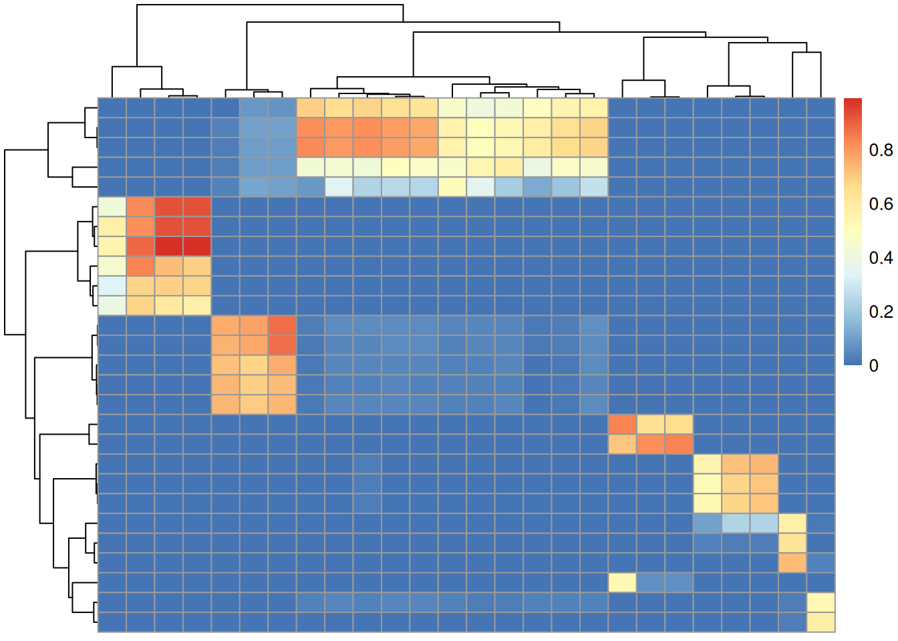
Only a fraction of our 108 experimental MS2 spectra could be matched to a reference with a similarity > 70%.
🐍 Calculate spectral similarity in Python
matchms provides alternative spectra similarity methods that would also account for neutral lossess hence possibly resulting in more or better matches. To use these we below translate also the reference MS2 data to Python.
#' R session:
#' transfer experimental MS data to Python
map2 <- c(defaultSpectraVariableMapping(), chrom_peak_rt = "chrom_peak_rt",
chrom_peak_mz = "chrom_peak_mz", chrom_peak_id = "chrom_peak_id",
spectrumId = "spectrum_id")
dda_ms2 <- setBackend(dda_ms2, backend = MsBackendPy(),
spectraVariableMapping = map2,
pythonVariableName = "dda_py")- Calculate spectra similarities between the experimental and reference spectra in Python.
#' Python session:
from matchms import calculate_scores
from matchms.similarity import ModifiedCosineHungarian
#' Calculate similarity scores
scores = calculate_scores(
dda_py, pest_py, ModifiedCosineHungarian(tolerance = 0.1,
intensity_power = 0.5))sim = scores.to_array()["ModifiedCosineHungarian_score"]Using the modified cosine similarity from matchms we got more hits:
The code below compiles the result table for this mapping; the first 6 hits are shown.
idx <- which(py$sim > 0.7, arr.ind = TRUE)
res <- data.frame(rtime = dda_ms2$rtime[idx[, 1L]],
chrom_peak_id = dda_ms2$chrom_peak_id[idx[, 1L]],
formula = pest_ms2$formula[idx[, 2L]],
name = pest_ms2$compound_name[idx[, 2L]],
sim = py$sim[idx])
res <- res[order(res$rtime), ]
head(res) rtime chrom_peak_id formula name
19 401.028 CP36 C15H16Cl3N3O2 Pesticide4_Prochloraz_C15H16Cl3N3O2_
49 401.028 CP36 C15H16Cl3N3O2 Pesticide4_Prochloraz_C15H16Cl3N3O2_
71 401.028 CP36 C15H16Cl3N3O2 Pesticide4_Prochloraz_C15H16Cl3N3O2_
14 401.438 CP34 C15H16Cl3N3O2 Pesticide4_Prochloraz_C15H16Cl3N3O2_
44 401.438 CP34 C15H16Cl3N3O2 Pesticide4_Prochloraz_C15H16Cl3N3O2_
66 401.438 CP34 C15H16Cl3N3O2 Pesticide4_Prochloraz_C15H16Cl3N3O2_
sim
19 0.8715850
49 0.9254726
71 0.8401160
14 0.8798988
44 0.9385590
66 0.8692899Comparing the calculated spectra similarity scores
We next compare the similarity scores calculated in R using the normalized dot product similarity (cosine similarity) with those from Python’s modified cosine from the matchms library.
#' R session:
psim <- py$sim
plot(as.vector(sim), as.vector(psim), pch = 21, col = "#00000080",
bg = "#00000040", xlab = "normalized dot product",
ylab = "modified cosine")
grid()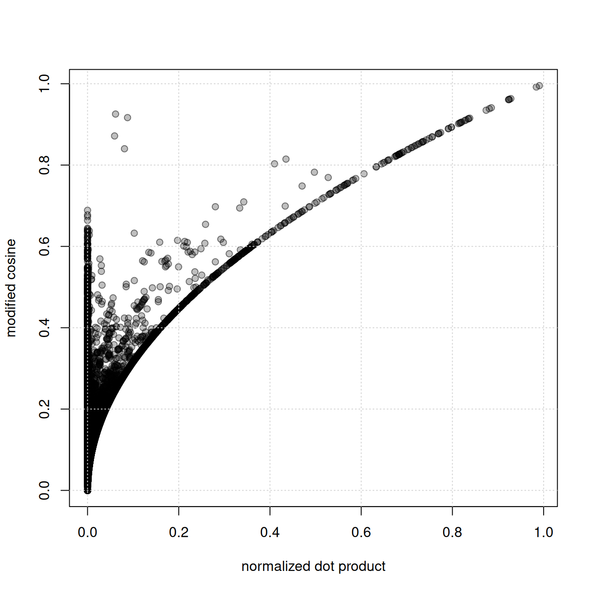
👉 the modified cosine similarity yields higher scores than the normalized dot product (regular cosine similarity).
🔎 inspect spectra with high modified cosine scores, but low normalized dot product similarity. By subtracting the precursor m/z from each fragment peak’s m/z we generate neutral loss spectra.
#' R session:
#' indentify matches with the largest difference
sim_diff <- psim - sim
idx <- which(sim_diff > 0.7, arr.ind = TRUE)
#' get the respective spectra
a <- dda_ms2[idx[1, 1]]
b <- pest_ms2[idx[1, 2]]
plotSpectraMirror(a, b, ppm = 0, tolerance = 0.1)
grid()
#' calculate neutral loss version of the spectra
a_n <- shiftPeaks(a, direction = "left", offset = "precursorMz")
b_n <- shiftPeaks(b, direction = "left", offset = "precursorMz")
plotSpectraMirror(a_n, b_n, ppm = 0, tolerance = 0.1)
grid()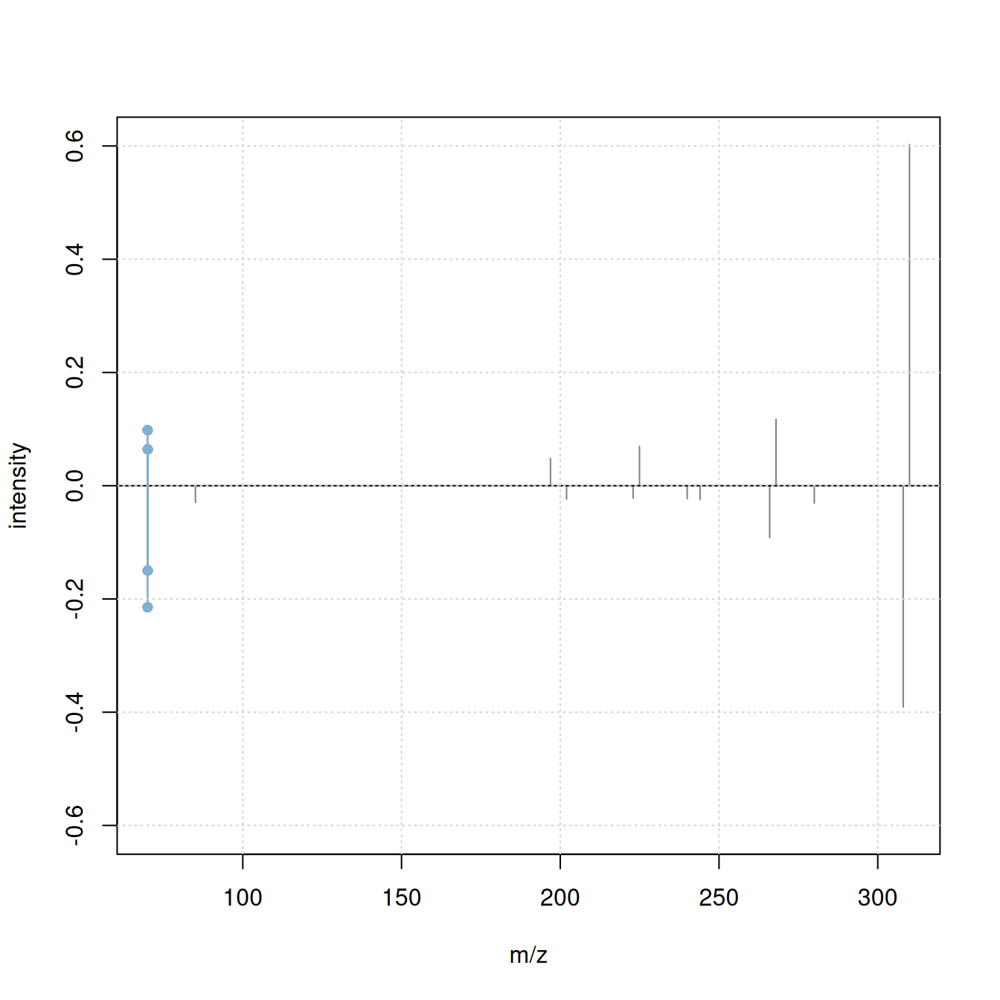
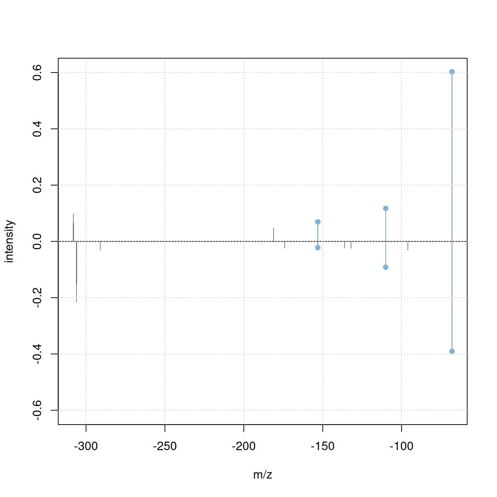
Only 2 fragment peaks were matching between the original spectra, while an additional 3 fragments match if the spectra’s precursor m/z is subtracted from the fragment peaks’ m/z.
Note
ℹ️ the
shiftPeaks()operation was only added to the processing queue of theSpectraobject but not immediately applied to the data. In R, the processing queue is applied on-the-fly to the data when requested. In Python, any of these data manipulations are therefore not visible. UseapplyProcessing()on theSpectraobject to realize and apply data manipulation operations.⚠️ before using
applyProcessing()read the?pyspec_copy_on_replacehelp to avoid invalidating potentially present data copies.
The difference between the spectra’s precursor m/z is:
a$precursorMz - b$precursorMz[1] 1.99692Note
ℹ️ 1.997 matches the mass difference between the 35Cl and 37Cl isotopes of chlorine (Cl) that have a mass of 34.9689 and 36.9659, respectively. It is thus likely that the observed difference in m/z is due to presence or absence of one of the two isotopes in the compared fragments. This is further supported by the relative high percentage of natural occurrence of both isotopes (76% and 24%) ref and the chemical formula of the matched compound, that contains chlorine:
#' R session
b$formula[1] "C15H16Cl3N3O2"Summarizing, with the matchms modified cosine similarity we can get more hits for our experimental MS2 spectra. SpectriPy allows to directly use this similarity measure on MS data originally processed in R avoiding thus the need of re-implementation of the respective function also in R. Through SpectriPy we could also use other powerful spectra similarity scoring algorithms available in Python, such as spec2vec (Huber et al. 2021) or ms2deepscore (Jonge et al. 2026).
Important notes
The shared data model used by MsBackendPy has some properties and possible disadvantages a user (or developer) should be aware of to avoid unexpected behavior:
- Change data in Python: will change the data also in R.
- Subset data in R: will subset the index to the individual spectra, data in Python is not changed.
- Subset data in Python: need to re-index the data in R.
- Multiple copies (or subsets) of the same original
Spectraobject pointing to the same variable in Python:applyProcessing()can cause data corruption as the data referred to by multipleSpectrais changed. See the Replacing data and ensuring data consistency section in the SpectriPy package vignette or?pyspec_copy_on_replacefor solutions.
Summary
Create more powerful data analysis workflows by combining functionality from R packages and Python libraries.
-
R advantages:
- flexible MS infrastructure: large variety of supported data and file formats
- Bioconductor’s AnnotationHub resource
- established preprocessing methodology for LC-MS data
-
Python advantages:
- more advanced spectra similarity algorithms
- higher performance for some operations
-
Advantage of an interactive, combined R/Python workflow:
- can use the original implementation of the respective analysis methods
- no need for re-implementation of methodology
- make the most of both programming languages and available packages/libraries.
Session information
#' R session:
sessionInfo()R version 4.6.0 (2026-04-24)
Platform: x86_64-pc-linux-gnu
Running under: Ubuntu 24.04.4 LTS
Matrix products: default
BLAS: /usr/lib/x86_64-linux-gnu/openblas-pthread/libblas.so.3
LAPACK: /usr/lib/x86_64-linux-gnu/openblas-pthread/libopenblasp-r0.3.26.so; LAPACK version 3.12.0
locale:
[1] LC_CTYPE=en_US.UTF-8 LC_NUMERIC=C
[3] LC_TIME=en_US.UTF-8 LC_COLLATE=en_US.UTF-8
[5] LC_MONETARY=en_US.UTF-8 LC_MESSAGES=en_US.UTF-8
[7] LC_PAPER=en_US.UTF-8 LC_NAME=C
[9] LC_ADDRESS=C LC_TELEPHONE=C
[11] LC_MEASUREMENT=en_US.UTF-8 LC_IDENTIFICATION=C
time zone: Etc/UTC
tzcode source: system (glibc)
attached base packages:
[1] stats4 stats graphics grDevices utils datasets methods
[8] base
other attached packages:
[1] pheatmap_1.0.13 matrixStats_1.5.0 SpectriPy_1.2.1
[4] reticulate_1.46.0 MsBackendMgf_1.20.0 curl_7.1.0
[7] MsDataHub_1.12.0 xcms_4.10.0 Spectra_1.22.0
[10] BiocParallel_1.46.0 S4Vectors_0.50.1 BiocGenerics_0.58.1
[13] generics_0.1.4 MsExperiment_1.14.0 ProtGenerics_1.44.0
[16] BiocStyle_2.40.0
loaded via a namespace (and not attached):
[1] DBI_1.3.0 httr2_1.2.2
[3] rlang_1.2.0 magrittr_2.0.5
[5] clue_0.3-68 snakecase_0.11.1
[7] MassSpecWavelet_1.78.0 otel_0.2.0
[9] compiler_4.6.0 RSQLite_3.53.1
[11] PTMods_1.0.0 png_0.1-9
[13] vctrs_0.7.3 reshape2_1.4.5
[15] stringr_1.6.0 pkgconfig_2.0.3
[17] MetaboCoreUtils_1.20.1 crayon_1.5.3
[19] fastmap_1.2.0 dbplyr_2.5.2
[21] XVector_0.52.0 rmarkdown_2.31
[23] preprocessCore_1.74.0 bit_4.6.0
[25] purrr_1.2.2 xfun_0.57
[27] MultiAssayExperiment_1.38.0 cachem_1.1.0
[29] jsonlite_2.0.0 progress_1.2.3
[31] blob_1.3.0 DelayedArray_0.38.2
[33] parallel_4.6.0 prettyunits_1.2.0
[35] cluster_2.1.8.2 R6_2.6.1
[37] stringi_1.8.7 RColorBrewer_1.1-3
[39] limma_3.68.3 GenomicRanges_1.64.0
[41] Rcpp_1.1.1-1.1 Seqinfo_1.2.0
[43] SummarizedExperiment_1.42.0 iterators_1.0.14
[45] knitr_1.51 IRanges_2.46.0
[47] Matrix_1.7-5 igraph_2.3.1
[49] tidyselect_1.2.1 abind_1.4-8
[51] yaml_2.3.12 doParallel_1.0.17
[53] codetools_0.2-20 affy_1.90.0
[55] lattice_0.22-9 tibble_3.3.1
[57] plyr_1.8.9 withr_3.0.2
[59] KEGGREST_1.52.0 Biobase_2.72.0
[61] S7_0.2.2 evaluate_1.0.5
[63] BiocFileCache_3.2.0 Biostrings_2.80.1
[65] ExperimentHub_3.2.0 filelock_1.0.3
[67] pillar_1.11.1 affyio_1.82.0
[69] BiocManager_1.30.27 MatrixGenerics_1.24.0
[71] foreach_1.5.2 MSnbase_2.37.0
[73] MALDIquant_1.22.3 ncdf4_1.24
[75] BiocVersion_3.23.1 hms_1.1.4
[77] ggplot2_4.0.3 scales_1.4.0
[79] glue_1.8.1 MsFeatures_1.20.0
[81] lazyeval_0.2.3 tools_4.6.0
[83] AnnotationHub_4.2.0 mzID_1.50.0
[85] data.table_1.18.4 QFeatures_1.22.0
[87] vsn_3.80.0 mzR_2.46.0
[89] fs_2.1.0 XML_3.99-0.23
[91] grid_4.6.0 impute_1.86.0
[93] tidyr_1.3.2 AnnotationDbi_1.74.0
[95] MsCoreUtils_1.24.0 PSMatch_1.16.0
[97] cli_3.6.6 rappdirs_0.3.4
[99] S4Arrays_1.12.0 dplyr_1.2.1
[101] AnnotationFilter_1.36.0 pcaMethods_2.4.0
[103] gtable_0.3.6 digest_0.6.39
[105] SparseArray_1.12.2 farver_2.1.2
[107] memoise_2.0.1 htmltools_0.5.9
[109] lifecycle_1.0.5 httr_1.4.8
[111] statmod_1.5.2 bit64_4.8.2
[113] MASS_7.3-65 References
Appendix
Match experimental MS2 spectra against MassBank
As an example how Bioconductor-managed annotation resources can be used in Python-based annotation workflows we next match the experimental MS2 spectra against MassBank. MassBank provides more coherent and standardized metadata and also defines releases which allow reproducible annotation. Also, MassBank annotation databases are available through Bioconductor’s AnnotationHub simplifying their integration into data analysis workflows.
#' R session:
library(AnnotationHub)
ah <- AnnotationHub()
query(ah, "MassBank")AnnotationHub with 8 records
# snapshotDate(): 2026-04-23
# $dataprovider: MassBank
# $species: NA
# $rdataclass: CompDb
# additional mcols(): taxonomyid, genome, description,
# coordinate_1_based, maintainer, rdatadateadded, preparerclass, tags,
# rdatapath, sourceurl, sourcetype
# retrieve records with, e.g., 'object[["AH107048"]]'
title
AH107048 | MassBank CompDb for release 2021.03
AH107049 | MassBank CompDb for release 2022.06
AH111334 | MassBank CompDb for release 2022.12.1
AH116164 | MassBank CompDb for release 2023.06
AH116165 | MassBank CompDb for release 2023.09
AH116166 | MassBank CompDb for release 2023.11
AH119518 | MassBank CompDb for release 2024.06
AH119519 | MassBank CompDb for release 2024.11
mb <- ah[["AH119519"]]
mb_ms2 <- Spectra(mb)We next repeat the analysis matching the experimental MS2 against these. Also, we remove MS2 spectra for which no precursor m/z was reported.
#' R session:
#' Process and clean the MS2 spectra
mb_ms2 <- mb_ms2 |>
filterIntensity(intensity = low_int) |>
reduceSpectra(ppm = 20) |>
filterPrecursorPeaks(ppm = 20) |>
scalePeaks()
#' Remove MS2 without precursor and with less than 4 fragment peaks
mb_ms2 <- mb_ms2[!is.na(precursorMz(mb_ms2))]
mb_ms2 <- mb_ms2[lengths(mb_ms2) > 3]
length(mb_ms2)[1] 55197Calculate similarity against reference spectra from MassBank
We next calculate the pairwise similarity between all experimental and reference spectra using the normalized dot product.
#' R session:
sim <- compareSpectra(dda_ms2, mb_ms2, ppm = 0, tolerance = 0.1)'MsBackendCompDb' does not support parallel processing. Switching to serial processing.[1] 54🐍 calculate similarity against MassBank in Python
We next transfer the MassBank data to Python to allow calculating similarities also with the matchms Python library. We define the available spectra variables we want to keep and translate to Python.
#' R session:
#' available metadata
spectraVariables(mb_ms2) [1] "msLevel" "rtime"
[3] "acquisitionNum" "scanIndex"
[5] "dataStorage" "dataOrigin"
[7] "centroided" "smoothed"
[9] "polarity" "precScanNum"
[11] "precursorMz" "precursorIntensity"
[13] "precursorCharge" "collisionEnergy"
[15] "isolationWindowLowerMz" "isolationWindowTargetMz"
[17] "isolationWindowUpperMz" "compound_id"
[19] "formula" "exactmass"
[21] "smiles" "inchi"
[23] "inchikey" "cas"
[25] "pubchem" "name"
[27] "spectrum_id" "spectrum_name"
[29] "date" "authors"
[31] "license" "copyright"
[33] "publication" "splash"
[35] "precursor_intensity" "precursorMz_text"
[37] "adduct" "ionization"
[39] "ionization_voltage" "fragmentation_mode"
[41] "collisionEnergy_text" "instrument"
[43] "instrument_type" "original_spectrum_id"
[45] "predicted" "msms_mz_range_min"
[47] "msms_mz_range_max" "synonym"
#' define which metadata to transfer
mb_map <- c(defaultSpectraVariableMapping(), compound_id = "compound_id",
inchi = "inchi", smiles = "smiles", formula = "formula",
spectrum_id = "spectrum_id", name = "compound_name")
#' store MS2 data to Python
mb_ms2 <- setBackend(mb_ms2, MsBackendPy(),
spectraVariableMapping = mb_map,
pythonVariableName = "mb_py")With also the MassBank data being available in Python we can proceed to calculate the similarity between the experimental and reference spectra.
#' Python session
#' calculate similarity scores
scores = calculate_scores(
dda_py, mb_py, ModifiedCosineHungarian(tolerance = 0.1,
intensity_power = 0.5))sim = scores.to_array()["ModifiedCosineHungarian_score"]More hits can be found with the modified cosine similarity.